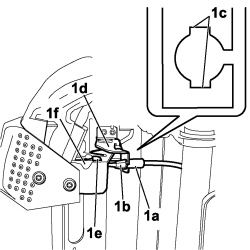

7045A83 FRONT SEAT SLIDING CONTROL HOSE (ONE), LH OR RH - R R WITH SEAT TAKEN AWAY
- Path
- Procedures > 70 FITTINGS > 7045 FRONT SEATS > 7045A FRONT SEAT ASSEMBLY > 7045A83 FRONT SEAT SLIDING CONTROL HOSE (ONE), LH OR RH - R R WITH SEAT TAKEN AWAY
- Kind
- repair procedure (removal / refitting; the operation number is the code)
- Applies to
- all engines; all production periods
- Interactive page
- https://sloeber94.github.io/elrnDB-fCrm/en/#/194001106
Applies to: all engines; all production periods
 Removing
Removing
 Refitting
Refitting1. Rotate the mechanism (1a) and release the end (1b) of the cable.
2. Rotate the end (2a) so that the retaining tabs (2b) are aligned with the slots (2c), press the retaining tabs and release the end from the bracket (2d).

Applies to: all engines; all production periods
1. Rotate the end (1a) so that the retaining tabs (1b) are aligned with the slots (1c), press the retaining tabs, release the terminal from the bracket (1d) and release the cable (1e) from the lever (1f).
- Release the cable from the retainer under the seat and remove it.

Applies to: all engines; all production periods
Refitting
Removing- Check that the cable slides freely in the outer casing.
- Attach the cable to the lever and secure the front terminal to the bracket.
- Fasten the cable to the retainer under the seat.
- Secure the rear terminal to the bracket and attach the cable terminal to the mechanism.
- Check the operation of the seat sliding mechanism.